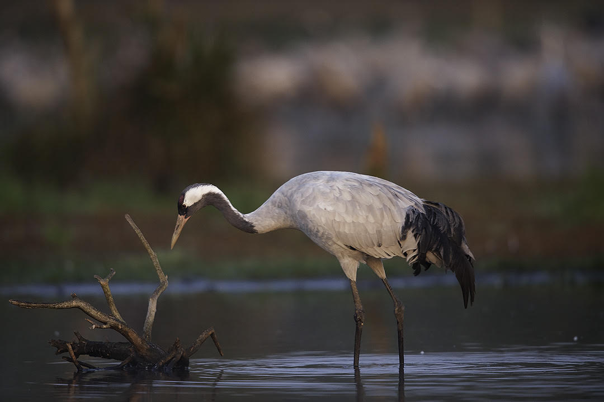
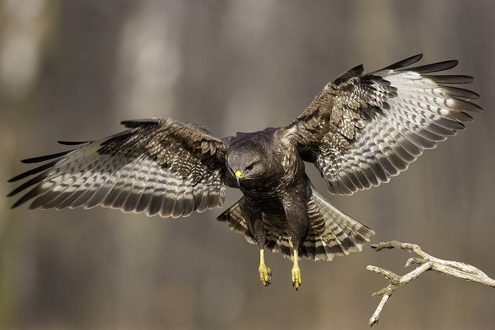

-
FOTO-PTAKIZDJĘCIE TYGODNIAZOBACZ ZDJĘCIE
 FOTO-PTAKIZDJĘCIE TYGODNIAZOBACZ ZDJĘCIE
FOTO-PTAKIZDJĘCIE TYGODNIAZOBACZ ZDJĘCIE- 
FOTO-PTAKIZDJĘCIE TYGODNIAZOBACZ ZDJĘCIE
- 
FOTO-PTAKIZDJĘCIE TYGODNIAZOBACZ ZDJĘCIE
PTASI BOHATER WYDANIA

PÓJDŹKA
Patrząc na zdjęcie nietrudno się domyślić, że ptasim bohaterem letniego wydania serwisu foto-ptaki.pl jest pójdźka. Jedna z mniejszych naszych sów, ale jakże ciekawa. Jest to ulubiona sowa naszego sowiego eksperta – Sławomira Rubachy, który tym ptakom poświęca na co dzień szczególnie dużo uwagi. Przygotował on specjalnie dla naszego serwisu artykuł poświęcony pójdźce, do którego lektury szczególnie namawiam. Ale nie tylko ten gatunek sowy znalazł miejsce w tym wydaniu. Gości on bowiem wspólnie z opisywaną już wcześniej sóweczką, o której tym razem piszą bracia Kłosowscy. Przypominam, że sóweczka to najmniejsza polska sowa ale jednocześnie chyba największa duchem... Kontynuujemy cykl artykułów o parkach narodowych. Tym razem niezwykle ciekawie pisze o Białowieskim Parku Narodowym Karol Zub – człowiek, który jak mało kto zna od podszewki ptasie (i nie tylko) życie Puszczy. A skoro zawitaliśmy już do leśnych ostępów, to zachęcam do lektury artykułu Bogusława Kotlarza, który raczy nas opowieścią o kąpielisku bielików.